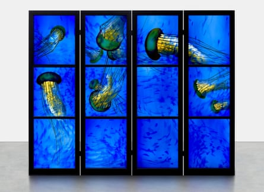

In later life, the artist Brian Clarke, who has died aged 71 of cancer, liked to recall an epiphany. As a child, on a school trip from his native Oldham to York Minster, and being shown its Great East Window , he had, he said, “ceased to be aware of his friends, even of location, because something beyond location had replaced it”. He passed out cold.
This experience, which he described on the online arts platform Heni in 2023 , attached him to what he called the “unbroken line to a glorious, complex and majestic past” represented by stained glass.
When the Minster’s east window had been finished in the first decade of the 15th century, most of the people who saw it would have been peasants living in poverty. Clarke’s awe was their awe.
The son of Edward, a coalminer, and Lilian (nee Whitehead), a cotton spinner at a local mill, Clarke had had a financially hard childhood. “I am working class by birth and by inclination,” he would later say. “My art is for the working class.”
It was also largely made in stained glass. His family having an interest in spiritualism, Clarke was sent to a spiritualist school before, at 13, winning a scholarship to Oldham School of Art and moving on to the Burnley College of Art two years later. At 17, he enrolled in the architectural stained glass course at North Devon College of Art and Design, graduating, in 1970, with a diploma in design.
World Without End, 2017.Photograph: Courtesy Brian Clarke Studio
At the Devon art school he had met a fellow student, Liz Finch, whom he married in 1972. Finch’s father, a clergyman, encouraged his new son-in-law to make a career in ecclesiastical glass. Like many art students of his day, however, Clarke had been won over by the snappy imagery of Pop artists such as Peter Blake . When he sent off his portfolio to traditional ecclesiastical glass makers, it was returned with horror.
It was only in 1975 that he found a patron willing to commission him. The resulting window, at All Saints Church in Habergham Eaves , Lancashire, retold the creation story in blocks of saturated colour. This was later described by one art historian as “the great dissonant masterpiece of English ecclesiastical stained glass of the 20th century”.
Even so, its maker’s life was hardly one of Anglican decorum. A 1983 photograph of Clarke by John Swannell in the National Portrait Gallery shows a faintly Bowie-esque artist apparently mid-crucifixion. By now, he had been the subject of an hour-long BBC Omnibus programme called Brian Clarke: The Story So Far (1978-79). This, and a Vogue Homme cover shot by Robert Mapplethorpe , propelled him into the London limelight. He was taken up by the gallerist Robert Fraser, known as Groovy Bob , who introduced him to the capital’s creative beau monde: Paul and Linda McCartney , Vivienne Westwood , Malcolm McLaren and, fatefully, Francis Bacon .
Bacon’s response to the question put to him by Clarke at their first meeting hinted at a problem in the younger artist’s future career. When Clarke asked Bacon whether he had ever made work in stained glass, the painter sneered, “No, and I’ve never done any macrame either, dear.” Although Clarke also made paintings and works on paper, his fame, then as now, rested on his work as a maker of stained glass; and stained glass making was a craft, not an art. This stigma would continue to haunt him.
Nevertheless, developing a technique by which he could work directly on float glass – “You couldn’t do a leaded window on a skyscraper,” Clarke reasonably remarked – he became internationally successful, particularly in architectural glass.
In 1980, he was commissioned to design a decorative programme for the mosque at King Khalid airport at Riyadh, Saudi Arabia, studying the aniconic traditions of Islamic art at Qur’an school in Fez for the purpose. This was followed by other high-profile commissions, notably for the New York headquarters of the drug giant Pfizer (1995), and the architect Will Alsop ’s Hôtel du Département des Bouches du Rhône (1994), known locally as Le Grand Bleu for Clarke’s wrap-around blue glass skin.
He added backlit panels and pillars to Norman Foster’s design for Stansted Airport (1991), and worked with Zaha Hadid on an unrealised housing project in Austria. (Clarke dubbed the material he had made for this Zaha-Glass.) He turned Queen Victoria Street in Leeds into an arcade by covering it over with a glazed roof (1990). His non-architectural glass works were shown in the bluest of blue-chip commercial venues, including the Gagosian and Pace galleries in London, and, most recently, at Damien Hirst’s Newport Street gallery, in an exhibition held to mark the artist’s 70th birthday.
And yet the art establishment largely looked away. Although the Tate owns a suite of Clarke’s works on paper, it has none of them on glass. No major public gallery has ever given him a show; he was never made a Royal Academician.
In part, this was because of a lingering snobbery about what was seen as craft, although there was also a sense that the mass appeal of Clarke’s work made it just too easy to be serious. “People haven’t always liked my art,” he said in an interview at the time of his 2023 show. “People have been downright fucking rude about it, in fact. But it’s all I’ve ever done.”
His habit of falling out with museum directors did not help. “I used to say it doesn’t matter because they’ll retire or die, then there’ll be a new generation of them,” Clarke said. “But now I’ve had rows with all the new ones too. British museums have made a point of ignoring me my entire career.”
His capacity for belligerence was not confined to his own work. On Bacon’s death in 1992, his companion, John Edwards, made Clarke an executor of the artist’s estate. In 1998, he became its sole executor, launching a lawsuit against Bacon’s former gallery, the Marlborough, for breach of duty over the painter, which was eventually dismissed and a settlement reached out of court, on terms that remain unknown. History repeated itself when Clarke became chairman of the Zaha Hadid Foundation following the architect’s untimely death in 2016. A series of disputes between the foundation and Hadid’s architectural firm followed, described in the press as toxic .
Clarke was knighted in 2024. He and Liz were divorced in 1996, before remarrying in 2013. She and their son, Dan, survive him.